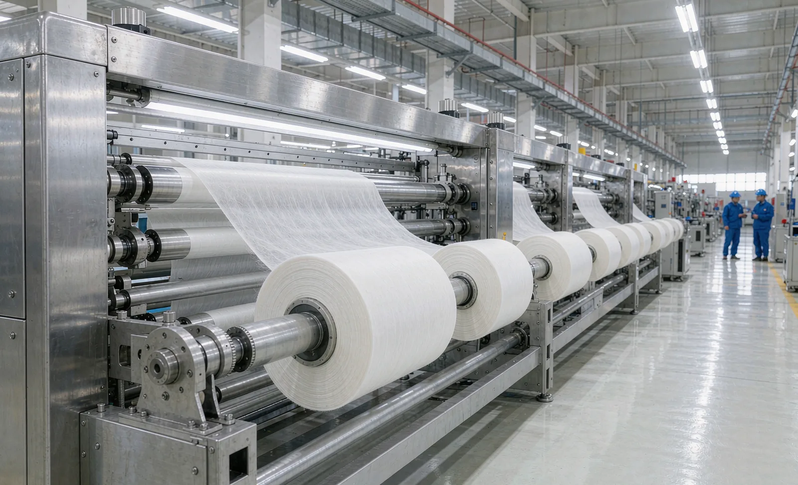
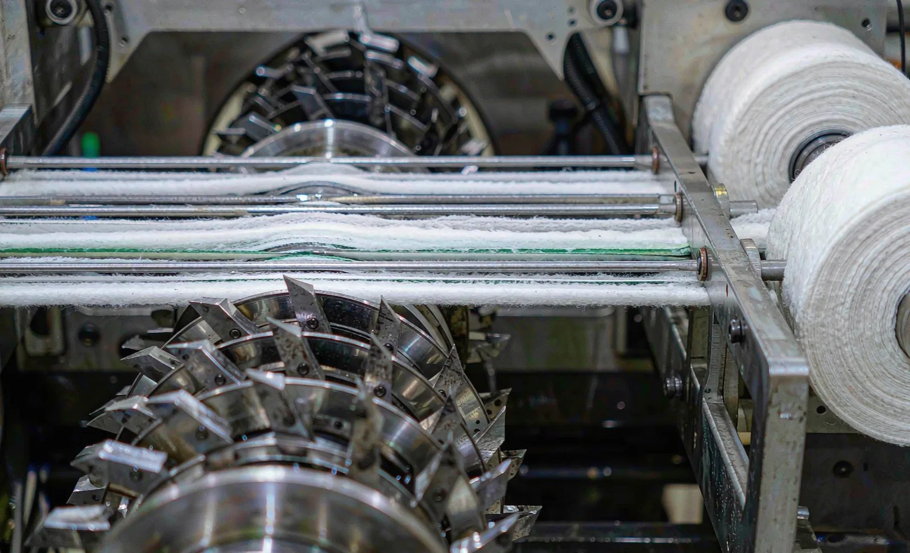

Published November 11, 2026 | By HDPTH Technical Editorial Team

Suppliers of slitter rewinders serve many industries, and a machine that slices polyester film all day can quietly underperform when the order book changes to hygiene materials. Diaper and sanitary napkin producers buy narrow-width rolls of topsheet, backsheet, acquisition layer and elastic laminate, every one of them rewound by a converter before it reaches the automated line. The webs are soft, low in basis weight, sensitive to stretch and scratches, and — for elastic grades — intentionally extensible. Getting clean edges and hard, flat, uniform rolls out of those materials is a specification exercise, and this guide walks through it layer by layer.
Why hygiene roll converting punishes the wrong machine
Three properties make hygiene webs harder than their appearance suggests. First, low basis weight: a topsheet spunbond at 15–25 g/m² carries almost no stiffness, so it flutters, stretches and creases under tension that a packaging film shrugs off. Second, surface sensitivity: spunlace and thermal-bonded topsheets mark easily against rollers and dust shields, and visible scars become rejects at the converting line. Third, extensibility: elastic laminates and lycra-covered webs keep stretching after the nip, which means a tension setpoint that is safe at the unwind can overstretch the web by the time it reaches the rewind. None of these problems shows up on a machine running the supplier’s demo film. They appear on week three of production, which is why the specification must be written for your stack and proven on your stack.
The hygiene material stack: what each layer demands
Write the machine requirement around the full roll list, not the easiest web. Topsheet nonwovens — spunbond, SMS, thermal-bond and spunlace grades — demand low, accurately controlled tension, smooth or compliant roller surfaces in the web path, and shear or ultrasonic cutting for edges that will not fuzz or lint into the product. Backsheet film, whether cast PE or breathable laminate, needs either razor or shear cutting with sharp blade management, plus anti-static measures because impermeable films charge and cling. Acquisition distribution layers are bulky, high-loft composites: they need generous web-path openings, gentle nip pressure and dust extraction tuned for fibre rather than film. Elastic laminates — hot-melt-bonded stretch film, creped laminates or lycra-containing webs — are the hardest: they require the lowest tension of the set, taper-tension rewind so the outside turns never crush the inside, and rewind torque control that stays flat at small roll diameters. A machine quoted for “nonwoven” generally is not automatically quoted for all four; make each material a named line in the specification with its own tension band, cutting method and speed.

Tension and winding: protecting soft, low-basis-weight webs
Tension architecture decides whether soft webs arrive clean or creased. Insist on closed-loop control with load cells sized for your lightest web — an oversized load cell loses resolution exactly where you need it — and on an unwind with enough inertia management to keep acceleration transients inside the tension band. The rewind should offer taper tension, reducing web tension as roll diameter grows, because a flat-tension profile on a soft nonwoven produces soft outsides, crushed insides and telescoping that the diaper line’s unwinder cannot tolerate. Driven nip rolls help, but for hygiene materials specify low and adjustable nip pressure: enough to control air entrainment, not enough to emboss the topsheet or delaminate a hot-melt-bonded elastic laminate. Finally, check the core handling: hygiene converters standardise on 3-inch cores, and concentricity at the chuck matters at converting speeds because roll runout becomes web flutter two stations later.
Cutting, trimming and edge quality on hygiene laminates
Edge quality is the most inspected property of a hygiene roll, because a fuzzing topsheet edge lints into the product and a poorly cut backsheet edge initiates web breaks. For spunbond, SMS and spunlace topsheets, shear cutting with overlapping circular knives gives the cleanest edge; ultrasonic cutting seals synthetic edges that would fuzz mechanically, at the cost of horn maintenance. Razor suits thin, impermeable backsheets where a shear blade would score the film. Score cutting has little place on soft nonwovens. Trim configuration matters as much as the blade: ask how each web’s trim is removed — vacuum, wind-up spools or continuous extraction — and whether the machine switches modes between materials. Blade wear shows on hygiene webs before it shows on film, so specify wear-indicating knife holders or a defined blade-change interval, and require an edge-quality reference: approved photographs of each material’s edge at production speed become the pass criterion at the acceptance test.
Finished roll geometry: matching the downstream unwinder
The slitter rewinder does not deliver to a warehouse; it delivers to the unwinder stands of a diaper or napkin converting line, and those stands define the roll specification. Maximum roll diameter is fixed by the stand’s threading envelope and by what the splice table can handle; typical hygiene converters run 800–1,200 mm. Core size, core type and chuck geometry must match, and roll width tolerance must be tighter than the converting line’s pattern — commonly ±1 mm, sometimes ±0.5 mm on printed or perforated layers. Beyond dimensions, converters judge density and hardness uniformity: a roll that is hard at the edges and soft in the middle breathes as it unwinds and wanders on the stand. Specify a roll hardness acceptance band, telemetry on splice count and placement, and roll labelling that carries material, width, length and batch for traceability. Every one of these lines should be measured, not promised, at the factory acceptance test.
Verifying the specification at the factory acceptance test
Acceptance for a hygiene-material machine is a material exercise. Freeze the production roll list — every material, basis weight, width and target speed — into the FAT protocol, and run the test on your own rolls, not the supplier’s demo web. Measure what the quotation promised: width tolerance across the full set of slit lanes, edge quality against the approved photographs, roll hardness maps at start, middle and end of each roll, telescoping and dishing limits, splice behaviour including automatic restart after zero-speed splices, and length-metering accuracy against a calibrated reference. Record numbers, not impressions, and carry the same protocol to the site acceptance test so commissioning compares like with like. A supplier who welcomes this programme has run it before; one who resists it is telling you where the risk lives.
Hygiene webs live or die on tension discipline, so our Slitter Rewinder Elastic Web Tension Buyer’s Guide extends this analysis to stretch-sensitive laminates, and the Spunlace Slitting and Rewinding Machine Guide covers the softest topsheet family in depth. To review machines engineered for clean, high-speed slitting of hygiene and other nonwoven materials, browse the HDPTH high-speed slitting machines series.
Need a Machine Matched to Your Hygiene Material Stack?
Send HDPTH your roll list — materials, basis weights, widths, roll diameters and line speed. Our engineers will specify tension control, cutting method and rewind configuration layer by layer, and quote the acceptance tests that prove each one.
Submit Your Project InquiryFrequently asked questions
Which materials must a diaper-line slitter rewinder handle?
A hygiene-material machine sees spunbond and spunlace topsheets, impermeable PE or breathable backsheet film, ADL acquisition layers, laminates bonded by hot-melt glue or thermal points, and elastic laminates with stretchable films or lycra strands. Each differs in basis weight, surface sensitivity and stretch, so the specification must be written around the full stack, not the lightest web.
How do you stop soft nonwovens from stretching or glazing during slitting?
Use closed-loop tension control with load cells sized to the low basis weight, taper-tension rewind profiles, driven nip rolls at low pressure, and diameters and surface finishes chosen for sensitive webs. Keep tension per layer within a few percent of the web’s elastic limit, and specify low-inertia unwind so accel-decel transients never exceed that band.
Which cutting method suits topsheet and backsheet slitting?
Shear cutting gives clean, fuzz-free edges on spunbond and spunlace and is the default for hygiene laminates; razor blades suit thin backsheet films; ultrasonic cutting seals edges on synthetics that would fuzz under shear. Score cutting is rarely acceptable on soft nonwovens. Ask the supplier to trial the full laminate and declare edge quality on the tested material.
What roll specifications do downstream converters demand?
Width within ±1 mm or tighter, consistent hardness and density across the roll, flat edges without telescoping or dishing, low runout at the core, correct splice count and placement, and traceable roll labels. Unwinder stands on the converting line hold rolls by diameter and core size, so finished roll geometry must match the stand’s envelope exactly.
How is hygiene-material handling verified at the factory acceptance test?
Run the agreed production roll list on your own materials at contract speed, then measure the promises: width tolerance, edge quality against approved photographs, roll hardness maps, telescoping limits, splice behaviour and length-metering accuracy. Record every result in the FAT protocol so it carries through to the site acceptance test.
Sources
- EDANA: the nonwovens industry association — standards, test methods and hygiene market guidance
- INDA: Association of the Nonwoven Fabrics Industry — technical resources and converting guidance
- ISO 9073 series: test methods for nonwovens, including tensile and web-property measurement
- Regulation (EU) 2023/1230 on machinery: health and safety requirements for new machinery